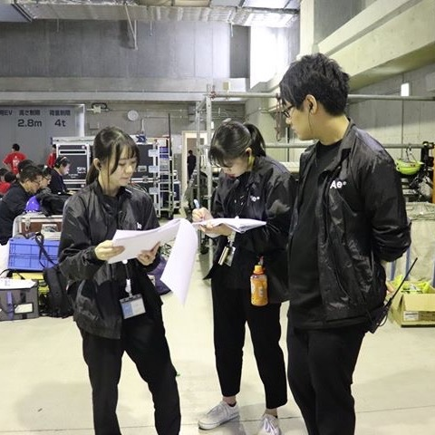
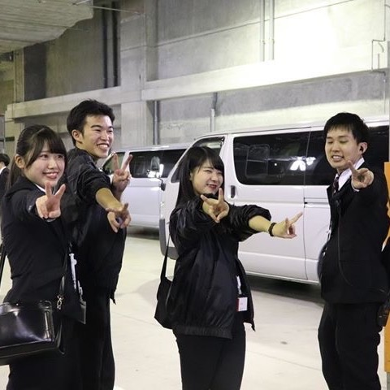

AGESTOCKの春は新歓活動から始まります！
新歓では説明会だけではなく、食事会や新歓合宿も行われています。新歓合宿では、団体の雰囲気や活動内容を知ることができます。また、先輩や同期になるであろう新入生たちと1泊2日過ごすことで団内での交友関係も築くことができます♪仲良くなれる企画が盛り沢山です！
そしてAGESTOCKを語る上で欠かせないもののひとつ、春イベントもこの時期に開催しています。新2年生が主体で作るイベントとなっています。みなさんぜひ来場して、その熱意を感じてみてください！！
AGESTOCKの1年間
春
夏
秋
冬
-


-


春は団体や局についての理解を深めてゆく、いわゆる準備期間。夏からいよいよ新入生の皆さんも本格的に活動していきます！！
例えば、イベント局では「プレストック」と呼ばれる新入生育成期間を設けています。プレストックでは春イベやアゲストの企画会議を疑似体験できます。ここでの経験が秋の学祭の企画会議で活かされていきます！
そして、AGESTOCK夏の一大エンタメ沖縄合宿♪
３ケタを超えるメンバーでの合宿は、みんなともっと仲良くなるチャンス！先輩とかかわる時間もたくさんあります。沖縄でみんなの距離がぐっと縮まったら… -
 
AGESTOCKが一年間でいちばん活発に活動する季節、秋。
学祭では複数の大学でゲスト様をお招きし、トークショーやライブイベントなどを企画・運営しています。
またAGESTOCKがもっとも力を入れているイベント「アゲスト」もこの秋に開催しています。このイベントのフィナーレとともに3年生は引退をむかえます。
学祭もアゲストも私たちAGESTOCKが中心となって企画・運営・進行をしていきます。学生の力で大きなイベントを打つことは並大抵のことではありません。すべてのメンバーがそれぞれの役割を完遂することがイベント成功のための絶対条件です。AGESTOCKはそんな責任感のある仲間を募集しています！
学祭・アゲストではフリーペーパーの配布も行っています。細部にいたるまでこだわりぬいたフリーペーパーもAGESTOCKの魅力のひとつです！！ -


冬はエンタメ！！
代替わりするこの季節、メンバー同士の中を深めるためにたくさんのエンタメを企画しています。
局のメンバーで行う「局合宿」、同期生で行う「学年合宿」などがあります。学年合宿ではテーマパークに行ったり、運動会をしたり…。合宿の企画もイベント同様、全身全霊本気でやっています(笑)
たくさんのエンタメに参加して、メンバーとの仲を深めよう♪